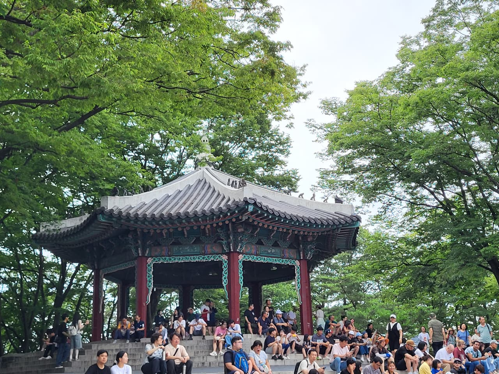
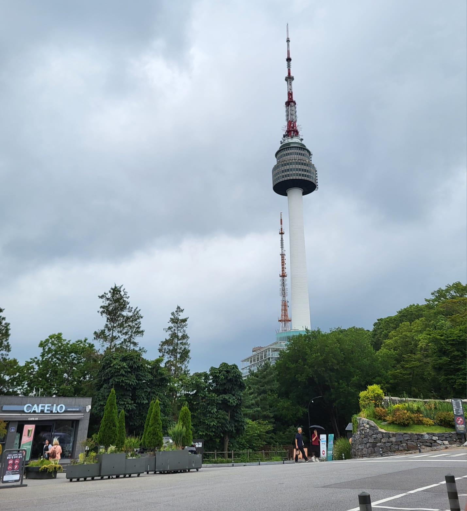
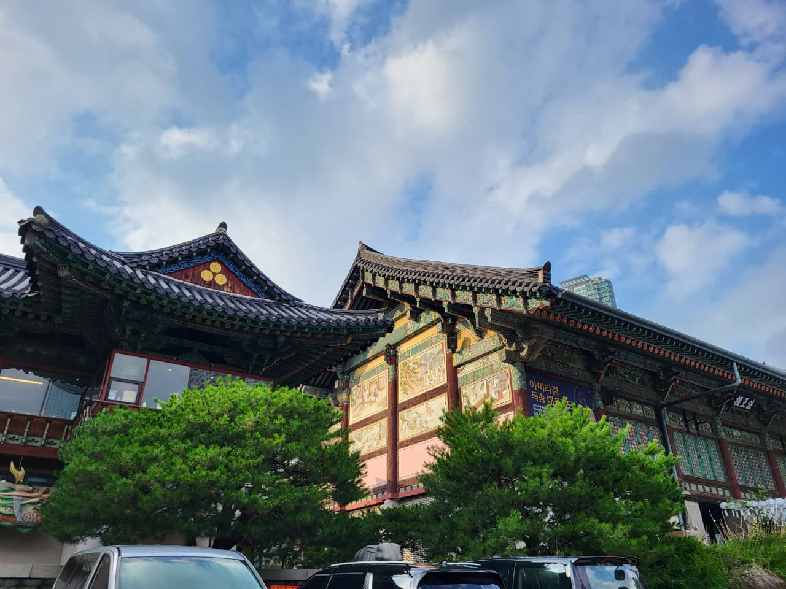
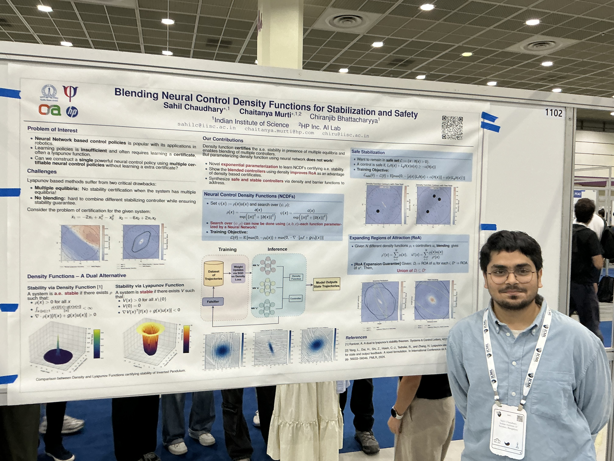

I recently went to Seoul to attend ICML 2026, my first conference. I had been meaning to write about it for a while, but the same old story of procrastination kept winning. I like to think of myself as a fairly lazy person, the kind who would rather spend most of his time listening to music or rewatching something he has already seen. Lately, though, a lot of coffee and a return to my project on Large Language Models have left me with more energy than usual, and with the experiments running quietly in the background on few small GPUs, more free time too. My laziness no longer has any upper hand and massive coffee intake with a lot of free time has taken over. So here we are :-) .
I should warn you that my writing is a work in progress, which is in fact one of the reasons I started blogging at all. This post will stay mostly non-technical. It is less about the papers themselves and more about how the conference changed the way I think about doing research, and about one question it left me circling: how do you balance sharpening your mathematical tools against staying genuinely engaged with a problem? I do not have an answer yet and the post is mostly about why I am asking the question, but I hope it will be useful to someone else who is also circling it.
I was in Seoul to present work that Chaitanya Murti (or shall I say Dr. Chaitanya Murti, congratulations Chai for your thesis defense), Prof. Chiranjib Bhattacharyya, and I did on synthesizing Neural Density Controllers. Please feel free to browse through the project page before I start my notes.
The talks
The first day was the easiest to love, partly because the talks were excellent and partly because there were no poster sessions to survive. I attended multiple talks during the conference but the I particularly remember the ones on the first day. Gautam Kamath spoke on machine unlearning at scale, which I really enjoyed and would like to think more on implications for AI safety. The one that stayed closest to me was Mark Schmidt's tutorial on optimization.
I spent a good part of my undergrad on optimization problems, convinced that a solid grasp of the field would be one of the more durable skills for a machine learning researcher. The more I read, though, the more it seemed that theory and practice did not agree with each other. For example: I have spend quite some time in proving the convergence of stochastic gradient method and its variants believing everyone used SGD in practice. But at the end of the day, most machine learning engineer uses torch.optim.Adam and achieve the best model possible (most of the time) which still does not have proof for non convex loss function. Schmidt did not fully pull me back into optimization, but he did offer a small thread of hope: the idea that distinguishing a gradient-dominated regime from a noise-dominated one might give us some intuition for why methods like Adam, Shampoo, and Muon work as well as they do. Considering I promised my kind readers to make this a non-technical blog, I will spare you the details, but if optimization is your thing, his slides are worth an afternoon.
Too many posters
Then came the posters. I do not think I understood what 6000 accepted papers actually meant until I walked into the hall. I had a grand plan: visit every poster, talk to every author, absorb everything happening in the corners of the field I had drifted away from. In my defense, I get excited easily, and it shows in the projects I take on. It also, apparently, shows in my poor conference planning.
The hall had something like 700 posters per session. I quickly downgraded the plan from "every poster" to "walk each row and stop wherever something catches my eye," and even that was too ambitious. By the end of the first session I had not covered even a quarter of the room, and I had not reached a single poster I had actually come to see, including ones whose papers I had already read. What I had instead was a headache and no desire to do it again.
So I did the obvious thing I should have done from the start (I blame my poor planning skills). Each night after that, I sat down and made a list of the specific posters I wanted to visit the next day, the ones tied to problems I work on or want to. That fixed almost everything. I enjoyed talking to each author, and I liked that nearly every presenter was visibly excited about their own work. I left with a long reading list I am not sure I will finish (and a lot of pictures of posters to remind myself to read those papers in detail).
The scale left me uneasy. The conference has grown so large that it is nearly impossible to have a conversation with someone outside your own niche. Forget conversation; even just visiting the posters you care about is a challenge, as my headache and a good chunk of that day's Twitter can confirm. I believe my grand plan did not account for the number of papers accepted this year. A lesson learned for the upcoming conferences, and something to be warned about for first-time attendees of conferences like ICML and NeurIPS.



What made a paper worth it
Here is the thing I keep coming back to. The posters and conversations I enjoyed most had almost nothing to do with how technical or fashionable they were. They were the ones where the author had a clear motivation, some real grasp of the surrounding literature, and, above all, genuine engagement with the problem. We are not in the business of pure mathematics. I like to think of machine learning as a marriage between applied math and algorithms.
Paper which either has a good exploration factor or good exploitation factor while having a clear motivation are the ones which stayed with me. By exploration I mean work that pushes the frontier a little, a speed-up, an improvement in accuracy on some class of problems, or an explanation for behavior we did not understand before. By exploitation I mean deliberately choosing a known technique because it genuinely fits the problem. For instance, if I wanted to do test-time adaptation for image generation, I might reach for ODE-based generation over SDEs, not because one is universally better, but because the ODE route buys me simpler analysis and an easier deployment. Either kind of paper can be excellent, but only when the motivation is honest. At this point, you may ask me, "Sahil, this is stupid. Most research fall into two categories either they are exploration or exploitation. You say you have a type but you have mentioned all the kinds possible out there". I do not have a very clear answer for this question but a example of something which does not excite me is a paper that staples two ideas together with no real motivation and then goes hunting for an experiment to justify some claimed "advantage."
Two papers from the conference fit this description and are still in my head. One was a theory paper on high-accuracy, dimension-free sampling with diffusions. Its motivation was precise: if you can push sampling to high accuracy, you can chase dimension-free bounds, and it followed that thread cleanly. The other was very much an exploitation paper, on quantization in diffusion models. The problem there is concrete. Quantization is a natural choice when you care about faster inference or tighter memory and compute budgets, but the moment you quantize, you are forced to edit the model. The paper handles this by adding a correction term and then characterizing the resulting numerical error in terms of the quantized model and its network. The first part is fairly simple algebra; the second part earns its conclusions through extensive experiments, and those experiments are what made the large corrections believable. Very different papers, same quality: both know exactly why they exist.
Presenting the poster
Presenting my own poster turned out to be the part I enjoyed most, and for a reason I did not expect. People came from very different backgrounds, and for each of them I had to decide, on the spot, which details to drop and which to focus on. That editing, choosing an exposition for a specific listener, is genuinely hard, and I have a new respect for anyone who has mastered it. Chai was there to present alongside me and to split the audience between us, which helped enormously. I am also grateful to the professors and friends who stopped by when we asked them to.

At this point of the blog, I should also thank Chai for his advice during the presentation.
Weird Dilemma
All of my experience at ICML led back to the question I mentioned at the start. To do good work in machine learning, you are expected to have a solid foundation in mathematics and, just as importantly, the ability to bring that rigor to address or solve an actual problem. But the definition of "solid foundation" varies for each person. Ten years ago, most of us would not have guessed that stochastic differential equations (SDEs) would become as central as they are now. Then diffusion models arrived, the theory of SDEs turned out to unify them, and suddenly SDEs became essential for understanding the distribution we are learning and what properties our models have. Now students are told to learn SDEs and treat them as foundational. Someone else might argue that only ODEs and probability theory belong in the required list, and the rest can be picked up during research (assuming one is working on Generative Modelling using Diffusion models). Thus, the definition depends on the person and the problem. As a student of Mathematics and Computing, my current instinct is to raid the math department and fill my toolbox with everything I can (which I should have done way before, I regret not doing so).
And here is my actual problem. I have a tendency to get lost in whatever mathematics I am holding and lose sight of the problem I picked it up for (may be loosing the sight of the problem is the general tendency). That is why I am treating my own advice with some caution and taking only three courses this semester, each fairly involved but each giving a coherent set of tools for the analysis of sampling and optimization. To engage with a problem statement, I also need to sit down and run a set of experiments to figure out my own understanding of the topic. This activity consumes a lot of time. But I would also like to take more courses and fill my toolbox. Hence, I still do not know how one is supposed to balance the sharpening and collecting of tools against real engagement with a problem. After this conference, that balance feels like the most important thing. I hope to find it before I start my PhD, and if not, keep trying throughout my research career.
Speed, GPUs, and Muon
There is a related thread running through nearly every paper I admired, whether it was theoretical, empirical, or both: the sheer speed at which these teams moved. This is precisely where I struggle. I tend to take my time understanding a problem and more time to propose a solution. These teams had clear motivation and the ability to act on it quickly, and I think this is where recent progress in coding agents actually helps people like me. Rapid prototyping lets you test a hypothesis fast and then move into the theoretical investigation almost immediately.
Some of the work was heavily experimental and, frankly, a function of who has the larger GPUs. This is a controversial thing to say, but I think that is fine. Plenty of interesting problems have come straight out of more compute sitting in more labs. I am not a natural fan of purely experimental papers, but I do see the value. A paper on double descent in large language models, for example, is very much experimental, yet it surfaces behavior consistent enough to be worth questioning and exploring. Muon is the obvious case here. It was introduced in a blog post by Keller Jordan and picked up a massive following, largely for how fast it trains LLMs. That energy was all over the conference: a striking number of papers were trying to explain its convergence or its acceleration, or carry its (empirical) success beyond transformers.
Workshops, and where this leaves me
If I am honest, and this is probably the reaction of a student, the best parts of the whole conference were the tutorials and workshops. A workshop is the easiest way to build an understanding of a topic that is still evolving, figure out the labs which are working on problems around that topic, and come out essentially with a reading list. I went to two workshops: one on diffusion models and one titled Frontiers in Game-Theoretic Learning. Both introduced me to new ideas in the field. Generalization and Memorization in Diffusion Models and Mean Field Games are two examples I can remember clearly and intend to read more on. I have always been excited by learning theory, and understanding the generalization behavior of diffusion models is important given how widely they are used in drug discovery and robotics. One reason I chose to attend the workshop on Game-Theoretic Learning was the essay A Collectivist, Economic Perspective on AI. The paper introduced me to the idea of agents interacting with each other and the environment in ways that change the data distribution, and to mechanism design as a way to address such problems. So I felt game-theoretic learning is something one must understand for upcoming research on agents. I am quite happy that I did end up attending both workshops.
The crowds were smaller compared to the main conference, which meant people could actually talk to each other about the problems they cared about. Next year I want to spend far more of my time in workshops than I managed this time. I think I would like to prepare more carefully about the workshops I attend and try to read material around the topics they cover.
The conference was quite large and there were exciting problems and ideas being discussed. In all honesty, the schedule was packed and yet I do feel I missed out on a lot. I am not sure if the conference can keep making room for every topic as the bubble around machine learning expands. However, the conference still remains a fast and nice place to engage with problems, try out your tools, and occasionally solve something you care about. I would like to attend more conferences like this, improve myself to take on harder and more interesting problems. But maybe first I should learn to complete my pending tasks and finish my reading list; bigger things like solving an Erdős problem or an open math problem can wait (or ask chat models to figure out an unsolved problem from the last 5 years and ask it to solve it).